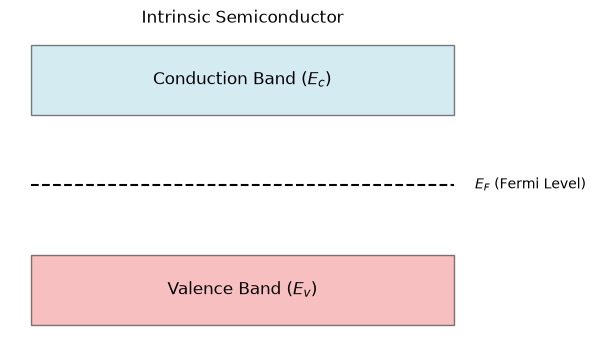

Intrinsic Semiconductor Energy Band Architecture
Direct inspection of bandgap mechanics, density of states, and intrinsic Fermi level derivation.
Electronic Band Structure
An intrinsic semiconductor is a chemically pure crystal (pure Silicon or Germanium) devoid of significant lattice defect concentrations or dopant impurities. Its electronic states are governed by quantum mechanical periodic potential solutions resulting in two allowed energy bands separated by a forbidden energy bandgap ($E_g$):
- • Conduction Band ($E_c$): The lowest unoccupied band at absolute zero ($0\text{ K}$). At $T > 0\text{ K}$, thermally elevated electrons occupy these states to conduct drift current.
- • Valence Band ($E_v$): The highest occupied band at $0\text{ K}$. When valence electrons break covalent bonds, vacant quantum states (holes) behave as positive charges.
- • Forbidden Bandgap ($E_g = E_c - E_v$): For Silicon at $300\text{ K}$, $E_g = 1.12\text{ eV}$. For Germanium, $E_g = 0.66\text{ eV}$; for GaAs, $E_g = 1.42\text{ eV}$.
Intrinsic Carrier Concentration Formula
$$n_i = \sqrt{N_c N_v} \exp\left(-\frac{E_g}{2 k_B T}\right)$$ Where $N_c = 2.8 \times 10^{19}\text{ cm}^{-3}$ and $N_v = 1.04 \times 10^{19}\text{ cm}^{-3}$ for Si at $300\text{ K}$. Standard Silicon $n_i \approx 1.5 \times 10^{10}\text{ cm}^{-3}$.

Fig. 1. Intrinsic Semiconductor with Fermi level $E_F$ positioned midway between $E_c$ and $E_v$.